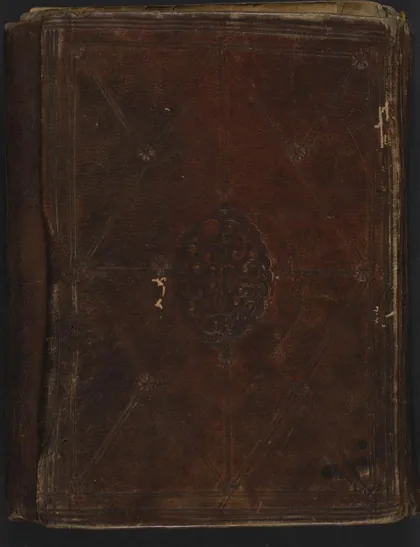

معالم التنزيل
Tafsir al-Baghawi
Baca Tafsir al-Baghawi (معالم التنزيل) karya Imam al-Baghawi secara gratis di Maktabah Ilmu: teks Arab, Indonesia (sebagian terjemah dibuat AI). Tanpa daftar, tanpa iklan.
Buka kitab iniLihat lemari ilmuDaftar isi
- معالم التنزيل
- (فصل في فضائل القرآن وتعليمه)
- (فصل في فضائل تلاوة القرآن)
- (فصل في وعيد من قال في القرآن برأيه من غير علم)
- سورة فاتحة الكتاب
- فصل في فضل (الفاتحة) (1)
- سورة البقرة مدنية (1) (1)
- سورة البقرة مدنية (1) (2)
- سورة البقرة مدنية (1) (3)
- سورة البقرة مدنية (1) (4)
- سورة البقرة مدنية (1) (5)
- سورة البقرة مدنية (1) (6)
- سورة البقرة مدنية (1) (7)
- سورة البقرة مدنية (1) (8)
- فصل في الدين وحسن قضائه وتشديد أمره
- سورة آل عمران - (1)
- سورة آل عمران - (2)
- سورة آل عمران - (3)
- سورة آل عمران - (4)
- سورة آل عمران - (5)
- سورة النساء -
- [فصل في قدر الصداق وفيما يستحب منه] (1)
- [فصل في قدر الصداق وفيما يستحب منه] (2)
- [فصل في قدر الصداق وفيما يستحب منه] (3)
- [فصل في قدر الصداق وفيما يستحب منه] (4)
- سورة المائدة
- قصة وفاة هارون (1)
- قصة وفاة هارون (2)
- سورة الأنعام (1)
- سورة الأنعام (2)
- سورة الأنعام (3)
- سورة الأعراف (1)
- سورة الأعراف (2)
- سورة الأعراف (3)
- سورة الأنفال (1)
- سورة الأنفال (2)
- سورة التوبة (1)
- سورة التوبة (2)
- سورة التوبة (3)
- سورة يونس
- سورة هود (1)
- سورة هود (2)
- سورة يوسف (1)
- سورة يوسف (2)
- سورة الرعد
- سورة إبراهيم
- سورة الحجر
- سورة النحل
- سورة الإسراء (1)
- سورة الإسراء (2)
- سورة الكهف (1)
- سورة الكهف (2)
- سورة مريم
- سورة طه
- سورة الأنبياء (1)
- سورة الأنبياء (2)
- سورة الحج
- سورة المؤمنون
- سورة النور (1)
- سورة النور (2)
… dan 91 bab lainnya.